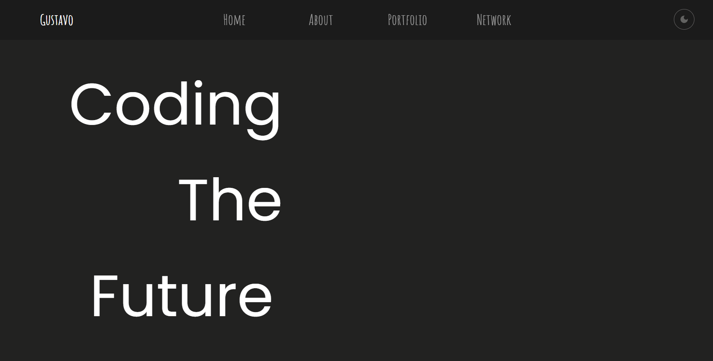
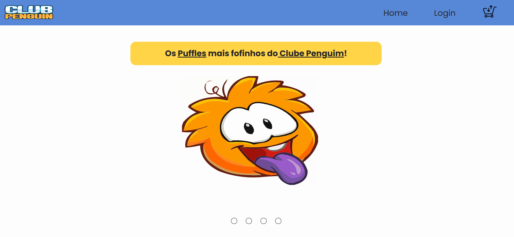
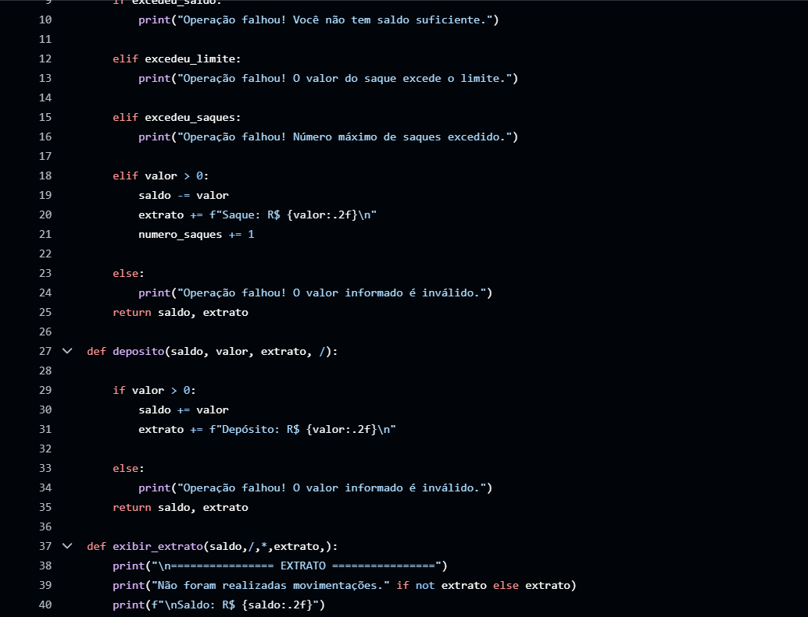

a
About Me
Hello. I am Gustavo Bruno, a Software Developer. I work with FrontEnd, with creation of Web Pages, using HTML5, CSS3 and JavaScript, and User Experience, User Interface (UI/UX). I'm also a BackEnd developer, by doing Python solutions.
I'm always developing my Hard Skills and Soft Skills, I'm a curious person, always wanting to learn new things, new solutions, new ideias!
I'm always increasing my knowledge, that's part of me, never letting me stay in the quo status, always wanting to increase my skills, logical thinking, teamwork and problem resolution.
a
Portfolio
Portfólio

Meu Portfolio, um site criado para testar minhas habilidades na criação de um site simples, utilizando HTML5, CSS3 e JavaScript, e também, para falar um pouco sobre mim e minhas habilidades
E-Commerce

Site Fictício de venda de Puffles do Clube Penguim. É um dos meus trabalhos formativos, feitos para me desafiar na criação de um site bonito, e que funciona como um comércio online!
Sistema Bancário

Sistema Bancário através de códigos em Python, é um dos exercícios em que me desafiei para criar algo complexo, um código limpo estruturado em funções.